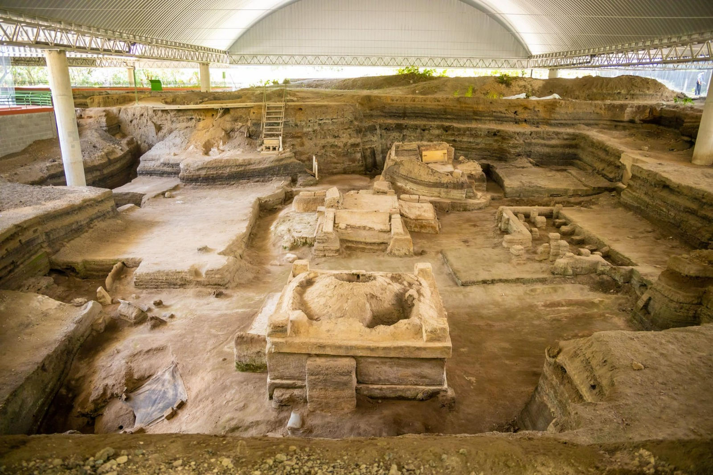
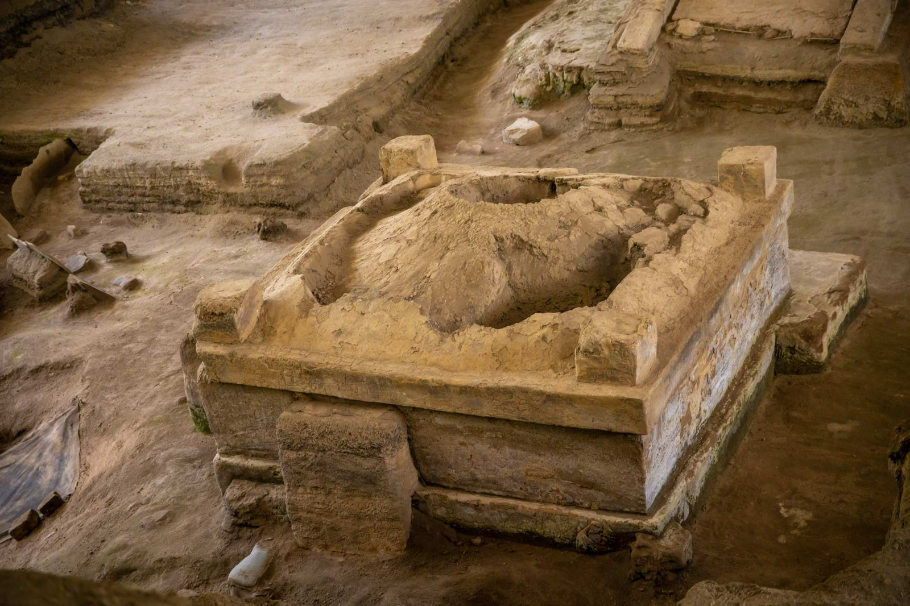

Joya de Cerén es uno de los sitios arqueológicos más importantes de El Salvador y fue declarado Patrimonio de la Humanidad por la UNESCO en 1993. Se encuentra en el departamento de La Libertad, cerca de San Juan Opico.
El lugar fue un antiguo pueblo agrícola que quedó enterrado por una erupción volcánica alrededor del año 600 d.C. Gracias a esta capa de ceniza, muchas de sus estructuras, objetos y cultivos se conservaron en un estado sorprendente.
A diferencia de otros sitios mayas, Joya de Cerén muestra cómo vivían las personas comunes de la época: sus casas, cocinas, herramientas y campos de cultivo. Por eso es considerado un sitio único para entender la vida cotidiana de las antiguas comunidades mesoamericanas.

